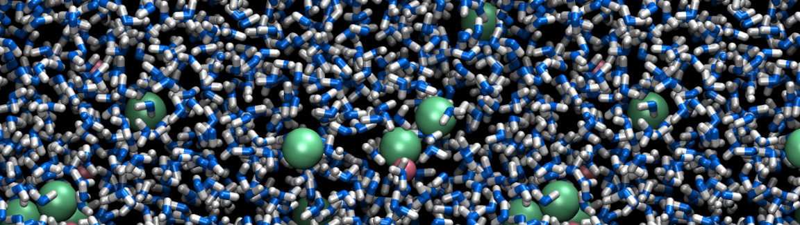
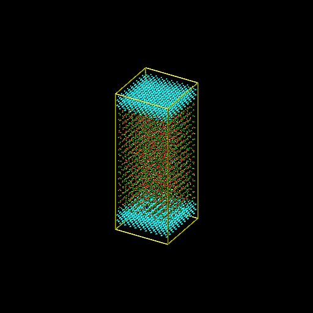

Nanoconfined electrolyte

In this tutorial, we are going to use molecular dynamics and simulate an electrolyte confined between two rigid carbon walls. If you are not already familiar with LAMMPS and molecular dynamics, I suggest you to follow tutorial 1, tutorial 2, and tutorial 3 first.
If you already have a good grasp on LAMMPS, you can download directly the input scripts that will be written following this tutorial, respectively input.01.lammps, input.02.lammps, and input.03.lammps. Download also the parameter file and the water molecule file.
In tutorials 1, 2, and 3, we used neutrals atoms interacting solenely through a Lennard-Jones potential. In the present tutorial, we are going model ions and water, therefore there will be additional coulomb interaction at play. In addition, we are going to deal with molecules (water), so we will see how to preserve the shape of these molecule during the simulation. The TIP4P/2005 rigid water model will be used, you can have a look at this wiki if your are not familiar with water models. In shorts, each water molecule is made of 4 dots, the oxygen, two hydrogen atoms, and one additional point 'M' where the charge of the oxygen is located. The shape of the molecule will be preserved within the simulations. Alternatively, flexible water models also exist.
Step 1 -- Generation of the system
Create a new folder that will contain all the files. Open a blank page using the text editor, and save it in the new folder using the name 'input.01.lammps'. Note that the '.lammps' extension has no importance. Copy the following lines into input.01.lammps.
##################
# Initialisation #
##################
units real
atom_style full
bond_style harmonic
angle_style harmonic
pair_style lj/cut/tip4p/long 1 2 1 1 0.1546 12.0
kspace_style pppm/tip4p 1.0e-4
There are many differentce with respect to previous tutorials. With the unit style 'real', masses are in grams per mole, distance in Ångstroms, time in femtoseconds, energy in Kcal/mole. With the atom style 'full', each atom is a dot with a mass and a charge. In addition, each atom can be linked by bonds, angles, dihedrals and impropers to form molecules. The 'bond_style' and 'angle_style' commands define what style of bond and angle to use in the simulation, and the 'harmonic' keyword imposes the potential to use.
Note: With a rigid model, the bond and angle styles are not really relevant, but LAMMPS requires them to be specified.
With the 'pair_style' named 'lj/cut/tip4p/long', atoms interact through both a Lennard-Jones (LJ) potential and through Coulombic interactions. This style is specific to four points water model, and automatically accounts for the additional massless site. The six numbers are, respectively, the atom type for the oxygen O of the tip4p water, the atom type for the hydrogen H of the tip4p water, the OH bond type, the HOH angle type, the distance from O atom to massless charge, and the cutoff. Note that the cutoff applies to both LJ and Coulombic interactions, but in a different way. For LJ 'cut' interactions, atoms interact with each other only if they are separated by a distance smaller than the cutoff. For Coulombic 'long', interaction between atoms closer than the cutoff are computed directly, and interaction between atoms outside that cutoff are computed in reciprocal space. Finally the kspace defines the long-range solver for Coulombic interactions. The pppm style refers to particle-particle particle-mesh.
Now that the parameters of the simulation have been specified, let us create the box. Copy the following lines into input.01.lammps, below the 'kspace_style' command.
#####################
# System definition #
#####################
lattice diamond 3.57
region box block -5 5 -5 5 -13 13
create_box 6 box &
bond/types 1 &
angle/types 1 &
extra/bond/per/atom 2 &
extra/angle/per/atom 1 &
extra/special/per/atom 2
The 'lattice' command defines the unit cell. Here 'diamond' with a scale factor of 3.57 has been chosen for the future positioning of the carbon atoms in a diamond cubic lattice. The 'region' command defines a geometric region of space, and by choosing 'xlo=-5' and 'xhi=5', and because we have previously chosen a lattice with scale factor of 3.57, the region 'box' extends from -17.86 to 17.86 Ångström (units of lengths are in Ångstrom because we have chosen the unit style 'real'). Finally, the 'create_box' command creates a simulation box with 6 types of atoms in the simulation: oxygen and hydrogen atoms of the water, Na, Cl, and the carbon atoms of the top and bottom walls respectively. Note that the carbon atoms of the top and bottom walls will be identical (same mass, same pairwise interaction, etc.), and the assignment of two different numbers is for practical reason only.
The create box command extends over 6 lines thanks to the '&' character. The second and third lines are used to specify that the simulation with contain 1 type of bond and 1 type of angle (for the water molecule). The parameters of these bond and angle constraint will be given later. The three last lines are for memory allocation.
We can now add the atoms to the system. First, we create two sub-regions corresponding respectively to the two solid walls. Then we create the atoms of type 5 and 6 within both regions respectively.
# create the walls
region rbotwall block -5 5 -5 5 -12 -10
region rtopwall block -5 5 -5 5 10 12
create_atoms 5 region rtopwall
create_atoms 6 region rbotwall
In order to add the water molecules, we first need to download the file H2O.txt. It contains all the necessary information about the water molecule, such as positions, bonds, and angle. Then, add the following lines to input.01.lammps:
# create the fluid
region rliquid block -5 5 -5 5 -9 9
lattice sc 4.0
molecule h2omol H2O.txt
create_atoms 0 region rliquid mol h2omol 482793
With the last four lines, a region used to deposit the water is created on the last defined lattice, which is 'lattice diamond 3.57'. Then, on the next line, we define a new simple cubic lattice in order to position the water molecules on it, with a distance of 4 Ångstroms between each water molecule. Note that 4 Ångstroms is larger than the typical equilibrium distance between water molecules in a liquid, but this will allow us to insert ions more safely. Then, the 'molecule' command open the 'H2O.txt' file, and name the associated molecule 'h2omol'. Finally, molecules are created on the sc lattice by the 'create_atoms' command. The first parameter is '0' because we use the atom id from the 'H2O.txt' file. '482793' is a seed that is required by LAMMPS, it can be any positive integer. Finally, let us deposit 20 ions (10 Na, 10 Cl) in between the water molecules by adding these two lines to input.01.lammps:
fix mydep1 all deposit 10 3 1 56513 region rliquid near 0.3
fix mydep2 all deposit 10 4 1 58613 region rliquid near 0.3
Each 'fix deposit' will add an ion at a random position within the 'rliquid' region every timestep. So we can just make a very short simulation of 10 timesteps and export the generated configuration. Note that 'mydep1' and 'mydep2' are the name I choose to give to the fix.
We need to define the parameters of the simulation: the mass of the 6 atoms (O, H, Na, Cl, C, C), the pairwise interaction parameters (here the parameters for the Lennard-Jones potential), and the bond and angle parameters. Copy the following line into input.01.lammps:
#######################
# Simulation settings #
#######################
include PARM.lammps
Create a new text file, call it 'PARM.lammps', and copy it in the same folder where 'input.01.lammps' is. Copy the following lines into PARM.lammps.
mass 1 15.9994
mass 2 1.008
mass 3 28.990
mass 4 35.453
mass 5 12.011
mass 6 12.011
pair_coeff 1 1 0.185199 3.1589
pair_coeff 2 2 0.0 0.0
pair_coeff 3 3 0.04690 2.4299
pair_coeff 4 4 0.1500 4.04470
pair_coeff 5 5 0.07 3.55
pair_coeff 6 6 0.07 3.55
bond_coeff 1 0 0.9572
angle_coeff 1 0 104.52
The parameters for water (mass 1, mass 2, pair_coeff 1 1, pair coeff 2 2, bond_coeff 1 and angle_coeff 1) are given by the TIP4P/2005 force field, the parameters for Na and Cl (mass 3, mass 4, pair_coeff 3 3, pair_coeff 4 4) are given by the CHARMM-27 force field, and the parameters for the carbon atoms (mass 5, mass 6, pair_coeff 5 5, pair coeff 6 6) are given by the AMBER force field. Each 'mass' command assigns a mass in grams/mole to an atom type. Each 'pair_coeff' assigns respectively the depth of the potential in Kcal/mole, and the distance at which the particle-particle potential energy in Ångstrom. We have only assigned pairwise interaction between atoms of identical type. By default, LAMMPS calculates the pair coefficients for the interactions between atoms of type i and j by using the geometrical rule. Other rules can be set with the 'pair_modify' command, but for the sake of simplicity, we are going to keep the default option here.
The bond coefficients (here for the O-H bond of the water molecule) set respectively the energy of the harmonic potential and the equilibrium distance in Ångstrom. The value is '0' for the energy, because we are going to use a rigid model for the water molecule. The shape of the molecule will be preserved by the shake algorithm (see later). Similarly, the angle coefficient (here for the H-O-H angle of the water molecule) set the energy of the harmonic potential (also 0) and the equilibrium angle in degree.
Finally, add the following line to input.01.lammps:
set type 3 charge 1.0
set type 4 charge -1.0
dump mydmp all image 10 dump.*.jpg type type
#######
# Run #
#######
run 10
write_data data.01.lammps
The 'run 10' indicates that the simulation must run for 10 timesteps. The value of the timestep (1 fs by default) does not matter yet because the atoms are not moving. We also need to specify the charge of the newly added ion, which is done using the 'set' commands. The write 'data_file' will create a file named 'data.01.lammps' containing all the information required to start the simulation using another input script. The 'dump' command with the 'image' image option will generate images of the system.
The first input script is ready to be executed. In the terminal windows, you should see something like that:
LAMMPS (20 Nov 2019)
Lattice spacing in x,y,z = 3.57 3.57 3.57
Created orthogonal box = (-17.85 -17.85 -46.41) to (17.85 17.85 46.41)
1 by 1 by 1 MPI processor grid
Created 1800 atoms
create_atoms CPU = 0.00362534 secs
Created 1800 atoms
create_atoms CPU = 0.000742934 secs
Lattice spacing in x,y,z = 4 4 4
Read molecule h2omol:
3 atoms with max type 2
2 bonds with max type 1
1 angles with max type 1
0 dihedrals with max type 0
0 impropers with max type 0
Created 4131 atoms
create_atoms CPU = 0.0022682 secs
(...)
Total wall time: 0:00:02
If the simulation is successfully, a file named 'data01.lammps' should be in the folder, as well as the following snapshot of the system:

Step 2 -- Energy minimisation
It is clear from the way the system has been created that the atoms are not at equilibrium distances from each others.
Particularly, some of the atoms of salt added using the 'fix deposit' command are very close to the water molecules. If we were to start a 'normal' molecular dynamics simulation now, the atoms would exert huge forces on each others and the simulation would most probably fail. Therefore we need to find a way to move the atoms and place them in a more favourable position before starting the simulation. This step is called 'energy minimisation', and is often necessary. To do so, let us open a new blank sheet in the same folder, and rename it input.02.lammps. The first lines will be very similar to the previous input file:
##################
# Initialisation #
##################
boundary p p p
units real
atom_style full
bond_style harmonic
angle_style harmonic
pair_style lj/cut/tip4p/long 1 2 1 1 0.1546 12.0
kspace_style pppm/tip4p 1.0e-4
#####################
# System definition #
#####################
read_data data.01.lammps
#######################
# Simulation settings #
#######################
include PARM.lammps
The only difference with input.01.lammps is that, instead of creating a box and atoms, we open and read the previously created file 'data.01.lammps' which contains the definition of the simulation box and the positions of the atoms. Next, we are going to create some groups with the different atom types :
group gH2O type 1 2
group gNa type 3
group gCl type 4
group gliquid type 1 2 3 4
group gtopwall type 5
group gbotwall type 6
neigh_modify exclude group gtopwall gtopwall
neigh_modify exclude group gbotwall gbotwall
dump mydmp all atom 1000 dump.02.lammpstrj
Creating groups allows us to apply different dynamics to the liquid and to the walls. The 'neigh_modify' commands indicate to LAMMPS that it is not necessary to evaluate interactions between the atoms of a wall, because internal deformations are not permitted. The 'neigh_modify' commands are not necessary, but save computation time. The last line asks LAMMPS to generate a dump file with the atoms positions.
Let us force the carbon walls to remain rigid during the simulation.
#######
# Run #
#######
# Walls
fix mysf1 gtopwall setforce 0 0 NULL
fix mysf2 gbotwall setforce 0 0 NULL
fix myaf1 gtopwall aveforce NULL NULL 0
fix myaf2 gbotwall aveforce NULL NULL 0
The first fix 'setforce' applies to the group 'gtopwall', which contains all of the atoms of type 5. This fix cancels the x and y components of the forces applied on the atoms of the group at each timestep. Therefore, given that these atoms have no initial velocity (which is the case here), they wont move along x anf y. This fix does nothing to the z component thanks to the 'NULL' keyword. The first fix 'aveforce' applies to the group 'gtopwall', and averages all the force exerted on the atoms of the group over z. As a consequence, the atoms of the group 'gtopwall' move as a block along z.
Now we will include the most important commands for the minimisation:
fix mynve all nve
compute tliq gliquid temp
fix myber gliquid temp/berendsen 1 1 1
fix_modify myber temp tliq
The fix 'nve', which we apply to all atoms, performs constant NVE integration to update position and velocity of the atoms at each timestep. The 'temp/berendsen' fix will rescale the velocities of the atoms of the group liquid (ions + water) every timestep in order to reset the temperature. Since we want to perform a minimisation step, I've set both initial and final temperatures equal to 1K. The third parameter is the damping factor, in time units, which determines how rapidly the temperature is relaxed. A damping factor of 1 fs would be too small for a molecular dynamics simulation, but is acceptable for a minimisation step during which we just want the atoms to move slightly from their initial positions. The 'fix_modify' is used to assign the temperature of the group 'gliquid' as calculated by the compute 'tliq' to the thermostating.
If we were to run the simulation as it is, it would fail, because nothing maintains the shape of the water molecules with time (the bond and angle energies are equal to 0). Therefore we need to use the shake algorithm in order to apply bond and angle constraints to the water molecules. In addition, we will also add a fix 'recenter' in order to maintain the system centred in the middle of the box in the z direction. This fix recenter has no influence on the dynamics.
fix myshk gH2O shake 1.0e-4 200 0 b 1 a 1
fix myrct all recenter NULL NULL INIT
Finally, let us choose a very small timestep (because we anticipate that the atoms are initially too close to each others) and run for 1000 timesteps (with the command thermo 100, thermodynamic info are printed in the terminal every 100 timesteps).
timestep 0.1
thermo 1000
run 5000
write_data data.02.lammps
In the terminal, you should see that the total energy of the system decreases as follow during the energy minimisation:
Step Temp E_pair E_mol TotEng Press
0 0 19656.737 0 19656.737 49529.333
1000 1.4484887 -3987.5314 0 -3960.0149 -2521.241
2000 1.0369954 -5479.6652 0 -5459.9657 -3672.1658
3000 0.96110033 -6295.8493 0 -6277.5916 -4294.163
4000 1.0598138 -6836.0972 0 -6815.9642 -4685.2421
5000 1.2657801 -7268.4856 0 -7244.4399 -4955.0044
Step 3 -- Equilibration
Starting from the final configuration of the minisation step, we can now run the molecular dynamics simulation. Here we are going to let the system evolve freely until it reaches an equilibrium. Let us create a new input file and call it input.03.lammps. Add the following lines:
##################
# Initialisation #
##################
boundary p p p
units real
atom_style full
bond_style harmonic
angle_style harmonic
pair_style lj/cut/tip4p/long 1 2 1 1 0.1546 12.0
kspace_style pppm/tip4p 1.0e-4
#####################
# System definition #
#####################
read_data data.02.lammps
#######################
# Simulation settings #
#######################
include PARM.lammps
group gH2O type 1 2
group gNa type 3
group gCl type 4
group gliquid type 1 2 3 4
group gtopwall type 5
group gbotwall type 6
dump mydmp all atom 1000 dump.03.lammpstrj
#######
# Run #
#######
fix mysf1 gtopwall setforce 0 0 NULL
fix mysf2 gbotwall setforce 0 0 NULL
fix myaf1 gtopwall aveforce NULL NULL 0
fix myaf2 gbotwall aveforce NULL NULL 0
neigh_modify exclude group gtopwall gtopwall
neigh_modify exclude group gbotwall gbotwall
fix mynve all nve
compute tliq gliquid temp
fix myber gliquid temp/berendsen 300 300 100
fix_modify myber temp tliq
fix myshk gH2O shake 1.0e-4 200 0 b 1 a 1
fix myrct all recenter NULL NULL INIT
timestep 1.0
thermo 5000
thermo_modify temp tliq
run 50000
write_data data.03.lammps
The two main differences with the previous step are the timestep (1fs instead of 0.1fs) and the thermostating. With a temperature of 300 K, the fluid is expected to behave as a liquid. A timestep of 1 fs is classic for these force field. Never use a larger timestep except if you have a good reason to do so. The result of the simulation is the following:
The fluid quickly forms a dense liquid. The final state of the simulation can be used as the starting point for more interesting simulations. It may take a few hours to run the full simulation. Alternatively, you can download the final 'data.03.lammps' file here.